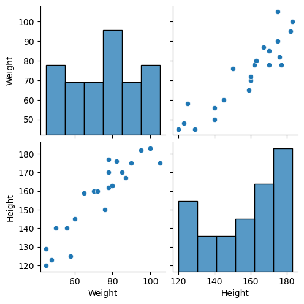
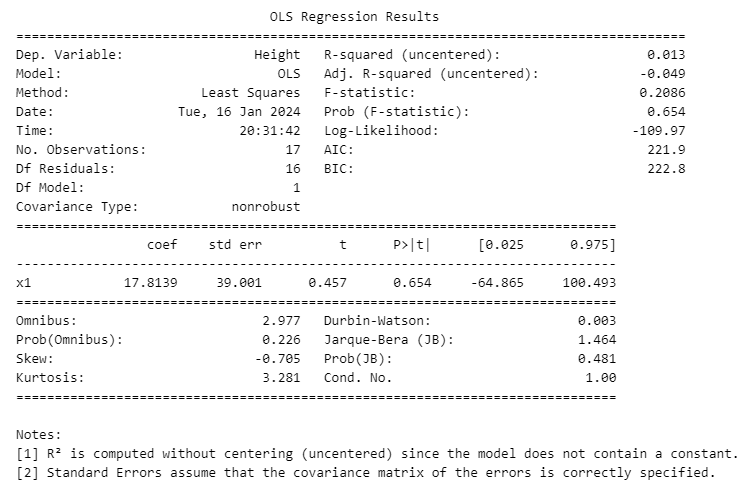
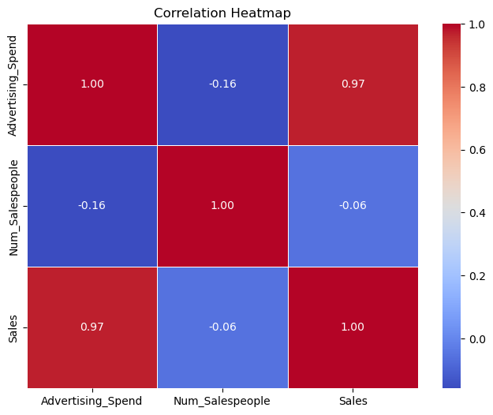
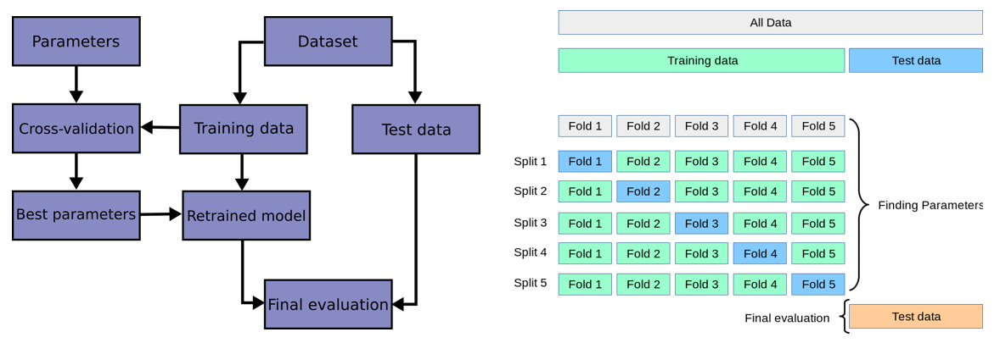

Linear regression is a popular and widely used algorithm in machine learning for predicting continuous numeric values. It models the relationship between independent variables (input features) and a dependent variable (target variable) by fitting a linear equation to the observed data. In this section, we will provide a brief overview of linear regression, including the mathematical explanation and figures to aid understanding
Mathematical Explanation
The linear regression algorithm aims to find the best-fit line that represents the relationship between the input features (x) and the target variable (y). The equation for a simple linear regression can be expressed as:
$$y = m x +c$$
where
y represents the target variable or the dependent variable we want to predict.
x represents the input feature or the independent variable.
m represents the slope of the line, which represents the rate of change of y with respect to x.
c represents the y-intercept, which is the value of y when x is equal to 0.
A linear line showing the relationship between the dependent and independent variables is called a regression line.
A regression line can show two types of relationship:
Positive Linear Relationship: If the dependent variable increases on the Y-axis and independent variable increases on X-axis, then such a relationship is termed as a Positive linear relationship.
Negative Linear Relationship: If the dependent variable decreases on the Y-axis and independent variable increases on the X-axis, then such a relationship is called a negative linear relationship.
Linear regression can be further divided into two types of the algorithm:
Simple Linear Regression: If a single independent variable is used to predict the value of a numerical dependent variable, then such a Linear Regression algorithm is called Simple Linear Regression.
Multiple Linear regression: If more than one independent variable is used to predict the value of a numerical dependent variable, then such a Linear Regression algorithm is called Multiple Linear Regression.
Assumptions of Linear Regression
Linearity of residuals: The relationship between the independent variables and the dependent variable is assumed to be linear. This means that the change in the dependent variable is directly proportional to the change in the independent variables.
Independence: The observations in the dataset are assumed to be independent of each other. There should be no correlation or dependence between the residuals (the differences between the actual and predicted values) of the dependent variable for different observations.
Normal distribution of residuals: The mean of residuals should follow a normal distribution with a mean equal to zero or close to zero. This is done in order to check whether the selected line is actually the line of best fit or not. If the error terms are non-normally distributed, suggests that there are a few unusual data points that must be studied closely to make a better model.
The equal variance of residuals: The error terms must have constant variance. This phenomenon is known as Homoscedasticity. The presence of non-constant variance in the error terms is referred to as Heteroscedasticity. Generally, non-constant variance arises in the presence of outliers or extreme leverage values.
Mathematical Explanation:
There are parameters β0, β1, and ϵ, such that for any fixed value of the independent variable , the dependent variable is a random variable related to through the model equation:
$$y=\beta_0 + \beta_1 x +\epsilon$$
where
= Dependent Variable (Target Variable)
= Independent Variable (predictor Variable)
= intercept of the line (Gives an additional degree of freedom)
= Linear regression coefficient (scale factor to each input value).
= random error.
The goal of linear regression is to estimate the values of the regression coefficients
This algorithm explains the linear relationship between the dependent(output) variable
and the independent(predictor) variable using a straight line
Goal
The goal of the linear regression algorithm is to get the best values for
and to find the best fit line.
The best fit line is a line that has the least error which means the error between predicted values and actual values should be minimum.
For a datset with observation ,
where the above function can be written as follows
where is the value of the observation of the dependent variable (outcome variable) in the smaple, is the value of observation
of the independent variable or feature in the sample, is the random error (also known as residuals) in predicting the value of ,
and are the regression parameters (or regression coefficients or feature weights).
In simple linear regression, there is only one independent variable () and one dependent variable ().
The parameters (coefficients) in simple linear regression can be calculated using the method of ordinary least squares (OLS) or gradient descent method.
The estimated parameters provide the values of the intercept and slope that best fit the data according to the simple linear regression model.
Ordinary least squares method
The equations and formulas involved in calculating the parameters are as follows:
Model Representation:
Let's suppose that predicted values of y after fitting the linear equation is:
$$h_\theta (x) = \theta_0 + \theta_1 x + \epsilon$$
Therefore, we can write error function as: \(\epsilon = y_i - h_\theta(x_i) \)
Cost Function or mean squared error (MSE):
The MSE, measures the average squared difference between the predicted values () and the actual values of the dependent variable (). It is given by:
is the actual value of the dependent variable for the i-th data point.
\(h_\theta(x_i)\) is the predicted value of the dependent variable for the i-th data point.
Minimization of the Cost Function:
The parameters and are estimated by minimizing the cost function. The formulas for calculating the parameter estimates are derived from the derivative of the cost function with respect to each parameter.
The parameter estimates are given by:
$$
Where:
is the estimated -intercept.
is the estimated slope.
is the covariance between and .
is the variance of .
is the mean of .
is the mean of .
Gradient Descent method for Linear Regression:
Gradient descent is the process of taking steps to find the minimum of the loss surface. Image Credit: Alexander Amini
A regression model optimizes the gradient descent algorithm to update the coefficients of the line by reducing the cost function by randomly selecting coefficient values and then iteratively updating the values to reach the minimum cost function.
Gradient Descent is an iterative optimization algorithm commonly used in machine learning to find the optimal parameters in a model. It can also be applied to linear regression to estimate the parameters (coefficients) that minimize the cost function.
The steps involved in using Gradient Descent for Linear Regression are as follows:
Define the Cost Function: The cost function for linear regression is the Mean Squared Error (MSE), which measures the average squared difference between the predicted values \(h_\theta(x^{(i)})\) and the actual values \(y^{(i)}\) of the dependent variable.
\(y^{(i)}\) is the actual value of the dependent variable for the i-th data point.
\(h_\theta(x^{(i)})\) is the predicted value of the dependent variable for the i-th data point.
Initialize the Parameters: Start by initializing the parameters (coefficients) with random values. Typically, they are initialized as zero or small random values.
Calculate the Gradient: Compute the gradient of the cost function with respect to each parameter. The gradient represents the direction of steepest ascent in the cost function space (for more details, see Calculation of the equations).
$$\frac{\partial (MSE)}{\partial \theta_0} = \frac{1}{n}\sum (h_\theta(x^{(i)}) - y^{(i)})$$
$$\frac{\partial (MSE)}{\partial \theta_i} = \frac{1}{n}\sum (h_\theta(x^{(i)}) - y^{(i)})\times x^{(i)}$$
Where:
\(\frac{\partial (MSE)}{\partial \theta_0}\) is the gradient with respect to the y-intercept parameter (\(\theta_0\)).
\(\frac{\partial (MSE)}{\partial \theta_1}\) is the gradient with respect to the slope parameter (\(\theta_1\)).
\(h_\theta(x^{(i)})\) is the predicted value of the dependent variable for the i-th data point.
\(y^{(i)}\) is the actual value of the dependent variable for the i-th data point.
\(x^{(i)}\) is the value of the independent variable for the i-th data point.
Update the Parameters: Update the parameters using the gradient and a learning rate (
α), which determines the step size in each iteration.
$$\theta_0 = \theta_0 - \alpha \times \frac{\partial (MSE)}{\partial \theta_0}$$
$$\theta_1 = \theta_1 - \alpha \times \frac{\partial (MSE)}{\partial \theta_1}$$
Repeat this update process for a specified number of iterations or until the change in the cost function becomes sufficiently small.
Predict: Once the parameters have converged or reached the desired number of iterations, use the final parameter values to make predictions on new data.
$$h_\theta (x_i)= \theta_0 +\theta_1 x$$
Gradient Descent iteratively adjusts the parameters by updating them in the direction of the negative gradient until it reaches a minimum point in the cost function. This process allows for the estimation of optimal parameters in linear regression, enabling the model to make accurate predictions on unseen data.
Let’s take an example to understand this. If we want to go from top left point of the shape to bottom of the pit, a discrete number of steps can be taken to reach the bottom.
If you decide to take larger steps each time, you may achieve the bottom sooner but, there’s a probability that you could overshoot the bottom of the pit and not even near the bottom.
In the gradient descent algorithm, the number of steps you’re taking can be considered as the learning rate, and this decides how fast the algorithm converges to the minima.
In the gradient descent algorithm, the number of steps you’re taking can be considered as the learning rate i.e.
α, and this decides how fast the algorithm converges to the minima.
Model Evaluation
To train an accurate linear regression model, we need a way to quantify how good (or bad) our model performs. In machine learning, we call such performance-measuring functions loss functions. Several popular loss functions exist for regression problems.
To measure our model's performance, we'll use one of the most popular: mean-squared error (MSE). Here are some commonly used evaluation metrics:
Mean Squared Error (MSE): MSE quantifies how close a predicted value is to the true value, so we'll use it to quantify how close a regression line is to a set of points.
The Mean Squared Error measures the average squared difference between the predicted values and the actual values of the dependent variable. It is calculated by taking the average of the squared residuals.
$$\boxed{\text{MSE} = \frac{1}{n} \sum \left(y^{(i)} - h_\theta(x^{(i)})\right)^2}$$
where:
is the number of data points.
is the actual value of the dependent variable for the $i-th$ data point.
is the predicted value of the dependent variable for the i-th data point.
A lower MSE value indicates better model performance, with zero being the best possible value.
Root Mean Squared Error (RMSE): The Root Mean Squared Error is the square root of the MSE and provides a more interpretable measure of the average prediction error.
$$\boxed{\text{RMSE} = \sqrt{\text{MSE}}}$$
Like the MSE, a lower RMSE value indicates better model performance.
Mean Absolute Error (MAE):
The Mean Absolute Error measures the average absolute difference between the predicted values and the actual values of the dependent variable. It is less sensitive to outliers compared to MSE.
$$\boxed{\text{MAE} = \frac{1}{n} \sum |y^{(i)} - h_\theta(x^{(i)})|}$$
A lower MAE value indicates better model performance.
R-squared () Coefficient of Determination
The R-squared value represents the proportion of the variance in the dependent variable that is explained by the independent variables. It ranges from 0 to 1,
where 1 indicates that the model perfectly predicts the dependent variable. A negative means that our model is doing worse.
$$\boxed{R^2 = 1 - \frac{\text{RSS}}{\text{TSS}}}$$
where:
Residual sum of Squares (RSS) is defined as the sum of squares of the residual for each data point in the plot/data. It is the measure of the difference between the expected and the actual observed output.
\(h_\theta(x^{(i)})\) is the predicted value of the dependent variable from the regression model
is the mean of the observed values of the dependent variable.
A higher
value indicates a better fit of the model to the data.
is commonly interpreted as the percentage of the variation in the dependent variable that is explained by the independent variables.
However, it is important to note that
does not determine the causal relationship between the independent and dependent variables. It is solely a measure of how well the model fits the data.
Note: A higher R-squared value indicates a better fit of the model to the data. However, it's essential to consider other factors and use
R-squared in conjunction with other evaluation metrics to fully assess the model's performance. R-squared has limitations, especially in the case of overfitting,
where a model may fit the training data very well but perform poorly on new, unseen data.
Adjusted R-squared:
The Adjusted R-squared accounts for the number of independent variables in the model. It penalizes the inclusion of irrelevant variables and rewards the inclusion of relevant variables.
A higher Adjusted R-squared value indicates a better fit of the model while considering the complexity of the model.
These evaluation metrics help assess the performance of a linear regression model by quantifying the accuracy of the predictions and the extent to which the independent variables explain the
dependent variable. It is important to consider multiple metrics to gain a comprehensive understanding of the model's performance.
Selecting An Evaluation Metric:
Many methods exist for evaluating regression models, each with different concerns around interpretability, theory, and usability. The evaluation metric should reflect whatever it is you actually
care about when making predictions. For example, when we use MSE, we are implicitly saying that we think the cost of our prediction error should reflect the quadratic (squared) distance between
what we predicted and what is correct. This may work well if we want to punish outliers or if our data is minimized by the mean, but this comes at the cost of interpretability: we output our error
in squared units (though this may be fixed with RMSE). If instead we wanted our error to reflect the linear distance between what we predicted and what is correct, or we wanted our data minimized by
the median, we could try something like Mean Abosulte Error (MAE). Whatever the case, you should be thinking of your evaluation metric as part of your modeling process, and select the best metric based
on the specific concerns of your use-case.
Are Our Coefficients Valid?:
In research publications and statistical software, coefficients of regression models are often presented with associated p-values. These p-values come from traditional null hypothesis statistical tests: t-tests are used to measure whether a given cofficient is significantly different than zero (the null hypothesis that a particular coefficient
βi equals zero), while F tests are used to measure whether any of the terms in a regression model are significantly different from zero. Different opinions exist on the utility of such tests.
Maximum Likelihood Estimation (MLE)
Maximum Likelihood Estimation (MLE) is a statistical method used to estimate the parameters of a statistical model. The fundamental idea behind MLE is to find the values of the model parameters that maximize the likelihood of observing the given data. In other words, MLE seeks the parameter values that make the observed data most probable under the assumed statistical model.
Key concepts of MLE:
Likelihood Function:
The likelihood function, denoted as \(L(\theta)\), is a measure of how well the model explains the observed data for a given set of parameter \(\theta\).
It is defined as the joint probability (or probability density) of the observed data given the parameters:
$$L(\theta) = P(D | \theta),$$
where \(D\) is the observed data.
Log-Likelihood Function:
In practice, it is common to work with the log-likelihood function \(l(\theta)\), which is the natural logrithm of the likelihood function.
Maximizing the log-likekihood is equivalent to Maximizing the likelihood, and it simplifies computations.
Parameter Estimation:
The goal of MLE is to find the values of the model parameters that maximize the likelihood (for log-likelihood) function.
Mathematically, this is expressed as
$$\hat{\theta}_{\text{MLE}} = \text{arg max}_\theta ~~L(\theta),$$
or
$$\hat{\theta}_{\text{MLE}} = \text{arg max}_\theta ~~l(\theta).$$
Optimization:
Typically, optimization algorithms (such as gradient descent, Newton's method, or other numerical optimization techniques) are employed to find the maximum of the likelihood function.
In some cases, analytical solutions exist, making it possible to find the values of the parameters directly.
Example: Consider a simple example of coin flipping, where we want to estimate the probability of getting heads. If we observe a sequence of coin flips (data),
the likelihood function would be the product of the probabilities of obtaining the observed outcomes (head or tails) under the assumed
probability parameter \(\theta\) that maximizes this likelihood.
Mathematical Notation:
In summary, Maximum Likelihood Estimation is a powerful method for estimating the parameters of a statistical model by maximizing the likelihood (or log-likelihood) of the observed data. It is widely used in various fields, including statistics, machine learning, and econometrics.
Likelihood function for linear regression
The likelihood function for linear regression is based on the assumption that the errors (\(\epsilon\)) are normally distributed. Therefore, the likelihood funstion is expressed as the product of the probabilities
of observing the actual data points given the parameters \(\theta_0, \theta_1,..., \theta_n\).
$$L(\theta) = \Pi_{i=1}^n \frac{1}{\sqrt{\pi \sigma^2}} \text{exp}\left(-\frac{y^{(i)} - h_\theta(x^{(i)})}{2\sigma^2}\right)$$
where:
n is the number of data points
\((x_i, y^{(i)})\) are the observed data pairs
\(\sigma^2\) is the variance of the error term.
Log-Likelihood Function:
It is defined as log of the likelihood function defined above.
MLE Objectives: The objective of MLE is to find the values of the coefficients that maximize the log-likelihood function:
Optimization: Optimization techniques, such as gradient descent or analytical solutions (set partial derivatives to zero), are used to find the values of the \(\hat{\theta}_0, \hat{\theta}_1, ..., \hat{\theta}_n\)
that mazimize the log-likelihood.
In practice, the MLE estimates for the \(\theta_0, \theta_1, ..., \theta_n\) are often equivalent to the least squares estimates obtained through the minimizing the sum of squaresd residuals.
For more details on overfitting and underfitting go to following link: Ridge lasso and Elastic net algorithms.
On this page, you'll find a comprehensive guide on selecting the most relevant variables when dealing with multiple factors. The detailed description outlines strategies to identify the best variables,
ensuring that a specific algorithm aids in constructing a model that guards against overfitting.
Lets consider a dataset of person with their Weight and Height. he data set can be found at:
Dataset.
Now we want to do the linear regression curve fitting, where we will see on the basis of model training, what would be height of a person with a given weight.
This can be done through the gradient decent method or OLS method. We will first look at gradient decent method.
Lets first import the import libraries:
import pandas as pd
import matplotlib.pyplot as plt
import numpy as np
import seaborn as sns
%matplotlib inline
Next we can load the dataset using:
df = pd.read_csv('Weight_height.csv')
the table will have two colmns:
df.head()
Weight
Height
45
120
58
125
48
123
60
145
70
160
The scattered and pair plot can be obtained using the 'seaborn' pairplot: sns.pairplot(df)

Now created the independent and dependent features as:
# Independe and dependent features
X = df[['Weight']] ## Always remember that independent features should be dataframe or 2 dimesnional array
y=df['Height'] ## this variable can be a series or 1D array.
Now deviding the dataset into the training an test dataset.
## Train test split
from sklearn.model_selection import train_test_split
X_train, X_test, y_train, y_test = train_test_split(X,y, test_size=0.25, random_state=42)
It is best to standardize the training and test datasets.
It is to be noted here that only transfor is used in the case of X_test. This is due to the following fact.
scaler = StandardScaler() this basically make norm of calulating the mean and standard deiation for the dataset.
However when we provide the X_train to the scaler.fit_transform, it basically calculate the mean and the standard deviation
and then transform the X_train. Next when we use the same scaler function, we don't need to recalculate the mean and standard deviation.
Now we fit the train datasets, using:
## Apply linear regression
from sklearn.linear_model import LinearRegression
regression = LinearRegression(n_jobs=-1)
regression.fit(X_train, y_train)
print(f"Coefficient or slop is: {regression.coef_}")
print(f"Intercept is: {regression.intercept_}")
The output will be
Coefficient or slop is: [17.81386924]
Intercept is: 155.88235294117646
We can see the fitted line:
## plot Training data plot and best fit line
plt.scatter(X_train, y_train)
plt.plot(X_train, regression.predict(X_train))
## Prediction for the test data
y_pred = regression.predict(X_test)
Model testing:
mse = mean_squared_error(y_test, y_pred)
mae = mean_absolute_error(y_test, y_pred)
rmse = np.sqrt(mse)
print(f"The Mean squared error is: {mse}")
print(f"The mean absolute error is: {mae}")
print(f"The root mean squared error is: {rmse}")
The output is:
The Mean squared error is: 119.78211426580515
The mean absolute error is: 9.751561944430335
The root mean squared error is: 10.944501554013556
Similalry R-squared can be caluclated as:
from sklearn.metrics import r2_score
score = r2_score(y_test, y_pred)
print(f"The r-squared value for the model is= {score}")
and the output is: The r-squared value for the model is= 0.724726708358188
Similalry adjusted R-squared can be obtained as:
$$ \text{Adjusted R-squared} = 1- \frac{(1-R^2)(n-1)}{n-k-1}$$
where
R^2 = is the R-squared value of the model,
n = The number of observations
k = The number of predictor variables
## displaying adjusted r squared value
1 - (1-score)*(len(y_test) - 1) / (len(y_test) - X_test.shape[1]-1)
and the adjusted r-squared value is: 0.655908385447735
Prediction of height for a person of weight 72 Kgs.
### Prediction for net data
new_weight = [[72]]
scaled_new_weight = scaler.transform(new_weight) # since we have standardized the training data, we mush use the standardize the weight
# Make the prediction
prediction_new_height = regression.predict(scaled_new_weight)
print(f"Height for the weight 72 Kg is: {prediction_new_height}")
The predicted height is 155.37 cms.
OLS method:
We can also use the OLS method for the above example.
import statsmodels.api as sm
model = sm.OLS(y_train, X_train).fit()
prediction = model.predict(X_test)
print(prediction)
This will give the prediction points for the X_test dataset. The model summary:
print(model.summary())
shows that the two methods discussed gave same coefficient and the intercept.

Example on multiple regression model
This example generates synthetic data for advertising spend, number of salespeople, and sales. It then performs multiple
linear regression analysis using the Advertising\_Spend and Num\_Salespeople as independent variables to predict Sales.
The code also includes visualization to compare actual vs. predicted sales.
Importing libraries
import numpy as np
import pandas as pd
import statsmodels.api as sm
import matplotlib.pyplot as plt
Generating random data and creating dataframe:
# Set a random seed for reproducibility
np.random.seed(42)
# Generate synthetic data
num_samples = 200
advertising_spend = np.random.uniform(50, 200, num_samples)
num_salespeople = np.random.randint(3, 10, num_samples)
error_term = np.random.normal(0, 20, num_samples)
sales = 50 + 2 * advertising_spend + 5 * num_salespeople + error_term
# Create a DataFrame
df = pd.DataFrame({'Advertising_Spend': advertising_spend, 'Num_Salespeople': num_salespeople, 'Sales': sales})
df.head()
Advertising_Spend
Num_Salespeople
Sales
0
106.181018
6
282.863129
1
192.607146
5
447.147707
2
159.799091
3
419.907267
3
139.798773
6
367.697179
4
73.402796
8
211.587913
The pair plot of this gives: sns.pairplot(df)
and the correlation of these are: df.corr() which gives as output following:

Cross validation:
Here we are going to use the cross-validation method to assess the performance and
generalizability of predictive model. The primary goal of cross-validation is to ensure that a model trained on a particular dataset can generalize
well to new, unseen data. It helps in estimating how well the model perform on an independent dataset. For more details, you can see the document (well explained),
or you can look at sklearn website: Cross-validation: evaluating estimator performance.

k-fold
In machine learning (ML), generalization usually refers to the ability of an algorithm to be effective across various inputs. It means that the ML model does not encounter performance degradation on the new inputs from the same distribution of the training data.
Definition: Cross-validation is a technique for evaluating a machine learning model and testing its performance. CV is commonly used in applied ML tasks. It helps to compare and select an appropriate model for the specific predictive modeling problem.
There are a lot of different techniques that may be used to cross-validate a model. Still, all of them have a similar algorithm:
Divide the dataset into two parts: one for training, other for testing
Train the model on the training set
Validate the model on the test set
Repeat 1-3 steps a couple of times. This number depends on the CV method that you are using
There are plenty of CV techniques of which some of them are:
The output is validation_score = ray([-437.35690029, -363.86846439, -321.13612303]), which infact represents the MSE each.
The mean of these can be found as: np.mean(validation_score) = -374.1204959020976 .
Prediction: Now we find the prediction as follows:
## prediction
y_pred = regression.predict(X_test)
Calculating the MSE, MAE:
from sklearn.metrics import mean_absolute_error, mean_squared_error
mse = mean_squared_error(y_test, y_pred)
mae = mean_absolute_error(y_test, y_pred)
rmse = np.sqrt(mse)
print(f"The Mean squared error is: {mse}")
print(f"The mean absolute error is: {mae}")
print(f"The root mean squared error is: {rmse}")
which in term gave:
The Mean squared error is: 508.99064011586074
The mean absolute error is: 17.628284263814095
The root mean squared error is: 22.560820909618087
R-squared value:
from sklearn.metrics import r2_score
score = r2_score(y_test, y_pred)
print(f"The r-squared value for the model is= {score}")
The r-squared value for the model is= 0.9326105266469662.
Calculating the residuals and seeing it's distribution: